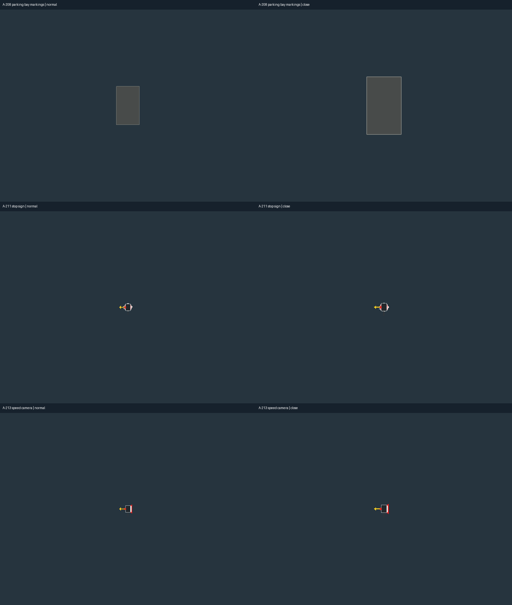
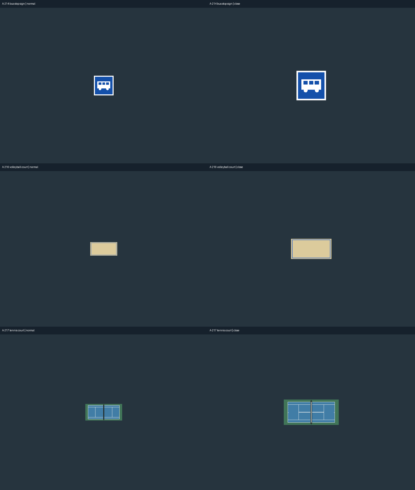
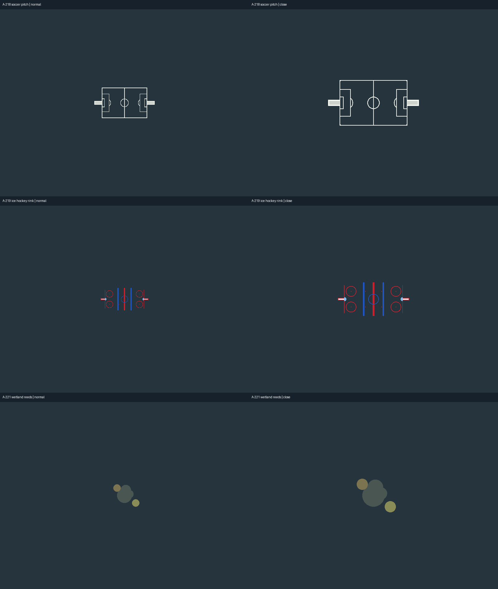
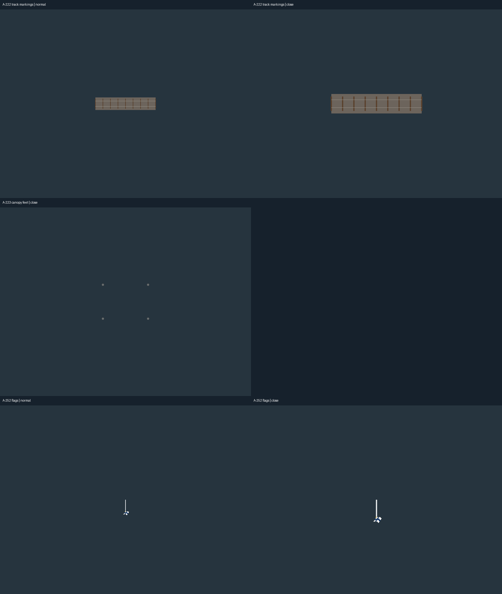
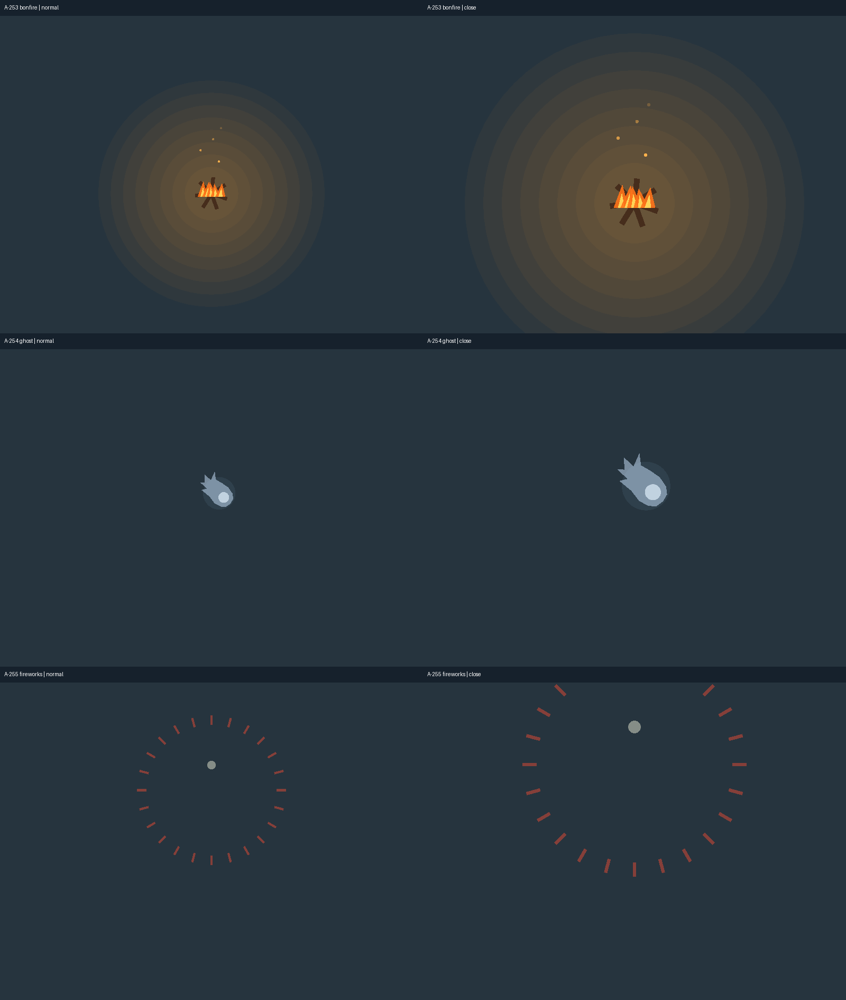
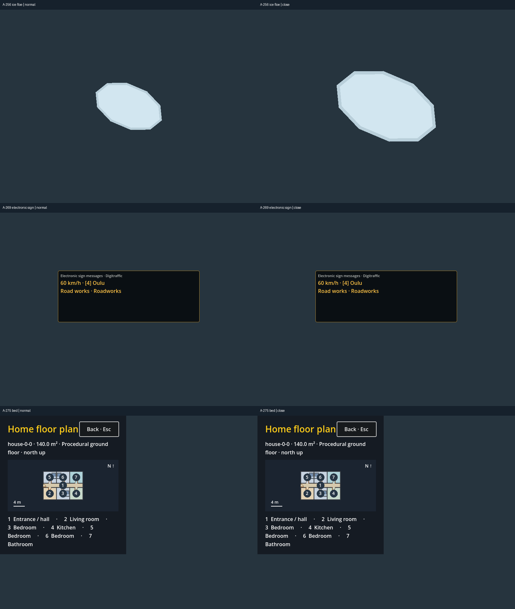
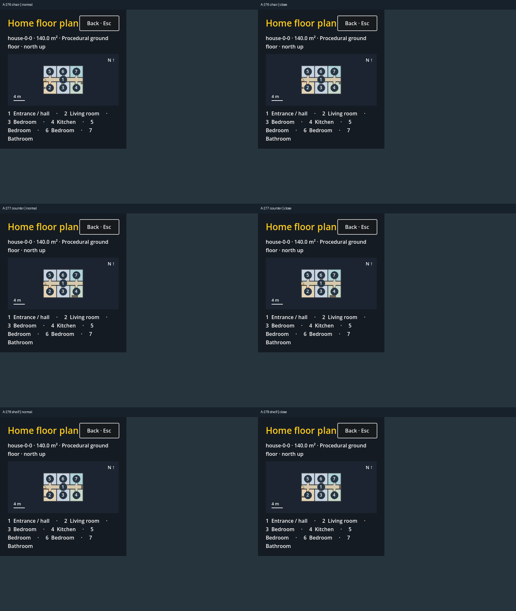
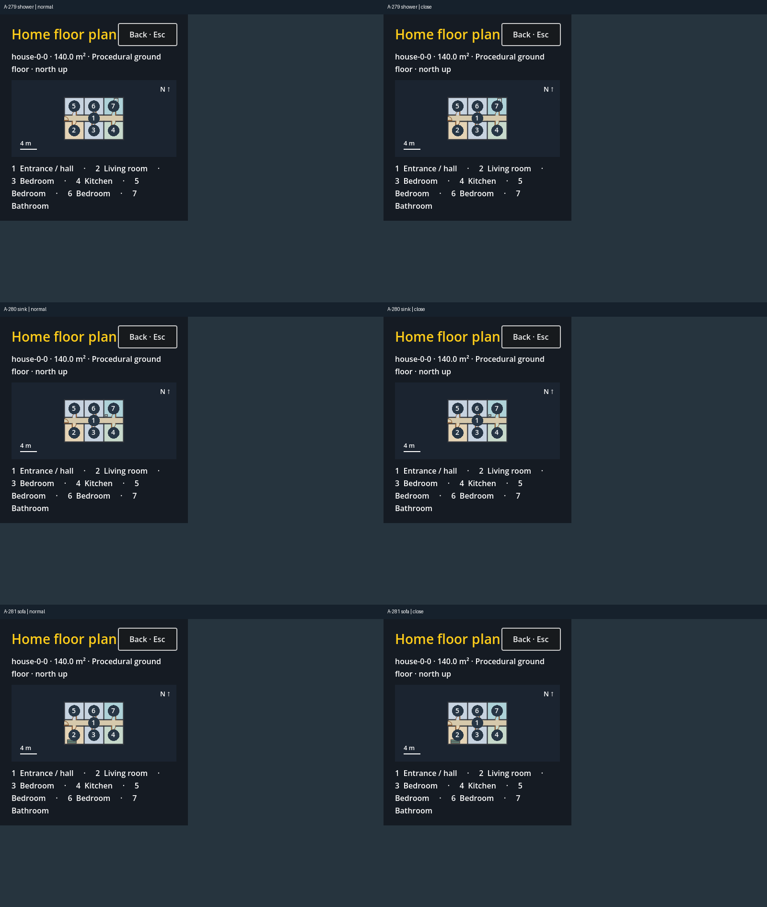
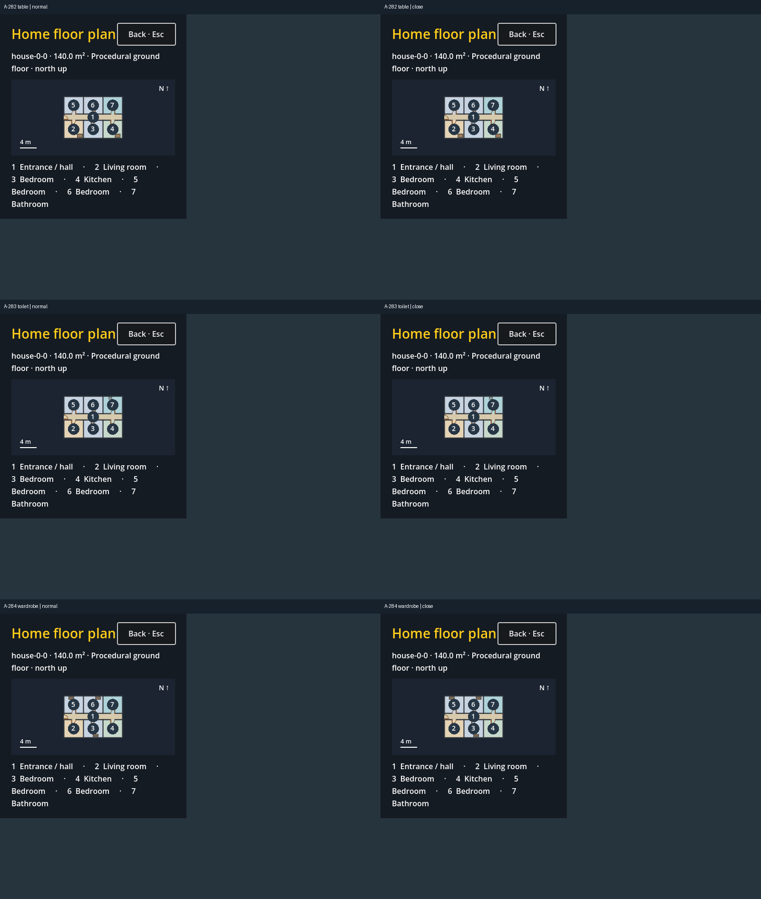
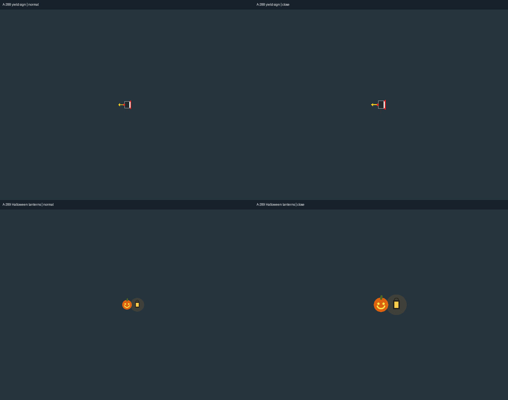

supplemental-canvas Native source pixels. Scroll horizontally if necessary; use browser zoom 100%. Review each panel, including rejected/empty slots. Opening this page does not mark review complete.
All families
supplemental-canvas_001.png · 6 panels · A-208, A-211, A-213 
supplemental-canvas_002.png · 6 panels · A-214, A-216, A-217 
supplemental-canvas_003.png · 6 panels · A-218, A-219, A-221 
supplemental-canvas_004.png · 6 panels · A-222, A-223, A-252 
supplemental-canvas_005.png · 6 panels · A-253, A-254, A-255 
supplemental-canvas_006.png · 6 panels · A-256, A-269, A-275 
supplemental-canvas_007.png · 6 panels · A-276, A-277, A-278 
supplemental-canvas_008.png · 6 panels · A-279, A-280, A-281 
supplemental-canvas_009.png · 6 panels · A-282, A-283, A-284 
supplemental-canvas_010.png · 4 panels · A-288, A-289 